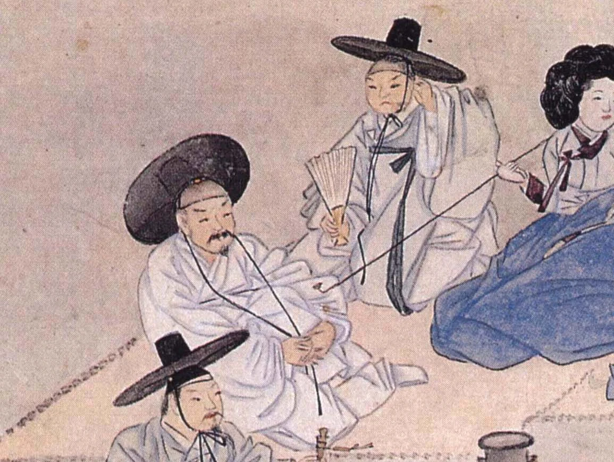
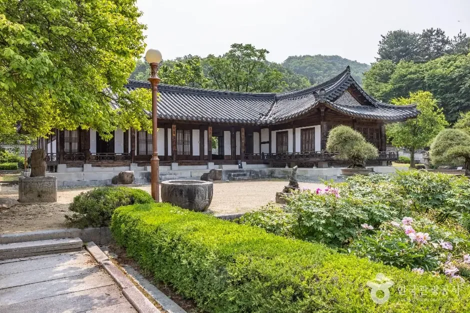
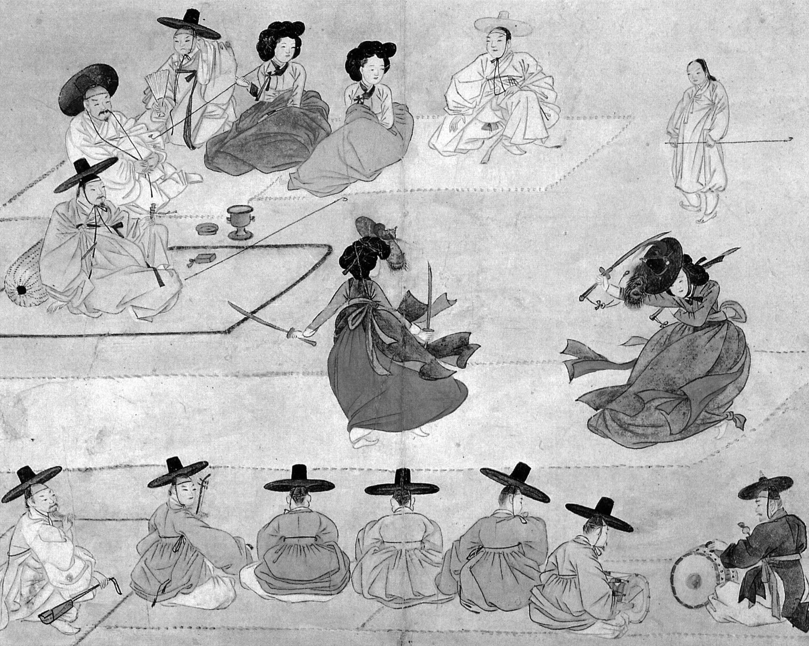
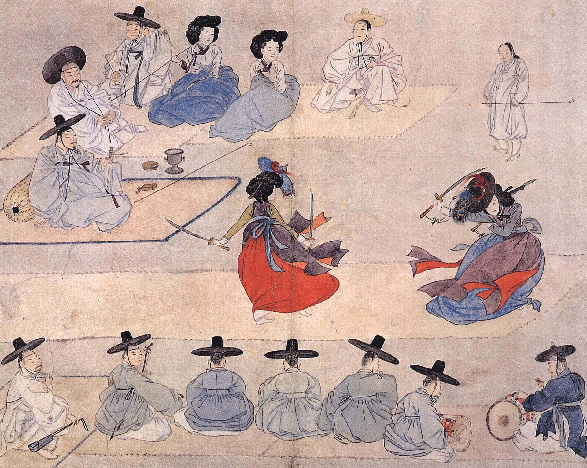
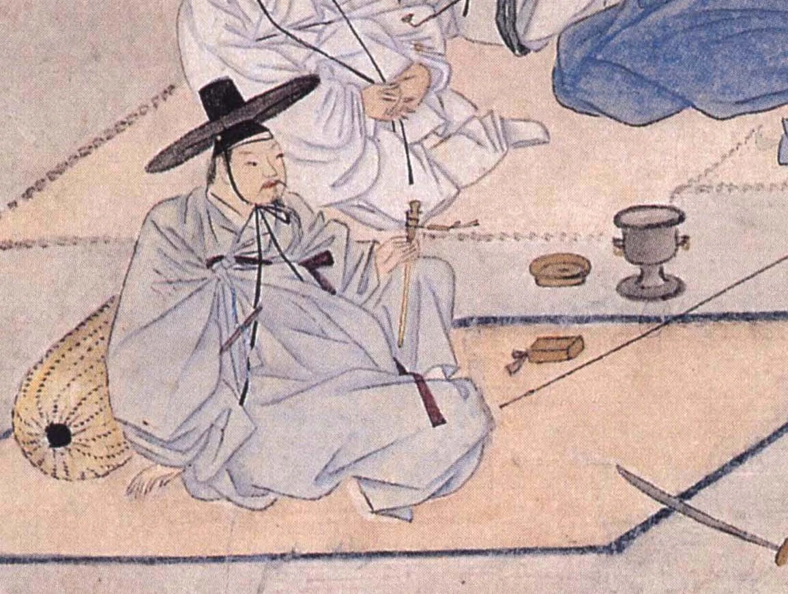

아직 펼치지 않은 카드우리 옷을 입은 성경 이야기 · 1김기창 「예수의 생애」 연작한국전쟁 중 피란지에서, 소리를 듣지 못하는 한 화가가 예수의 일생을 30점의 그림으로 그렸어요. 그림 속 예수는 어떤 옷을 입었을까요?갓을 쓰고 도포를 입은 예수님 그림이 있대!
1952~1953년전북 군산 · 피란지의 처가
김기창 「예수의 생애」 연작
한국전쟁 중 피란지 군산에서, 소리를 듣지 못하는 화가 운보 김기창은 한 부자가 가져온 혜원 신윤복 그림의 흑백 사진 서른 장을 넘겨 보았어요. 운보는 이 일로 예수를 조선 옷차림으로 그리기로 마음먹었다고 해요. 혜원의 그림에 예수는 나오지 않지만, 운보가 예수에게 입힌 옷들은 그 속에 있어요. 하나씩 찾아보세요.
전쟁을 피해 간 곳에서, 한 화가가 옛날 그림 사진을 서른 장 봤대. 그리고 예수님한테 갓을 씌우고 도포를 입혔어! 옛날 그림 속에서 그 옷을 찾아볼까?
검수 전 시안이에요(기준서 1판). 운보의 「예수의 생애」는 저작권이 남아 있어 싣지 않았어요. 대신 운보가 사진으로 본 화가, 혜원 신윤복의 그림(퍼블릭 도메인)으로 만들었어요. 흑백 그림은 이 안내서가 원본을 흑백으로 바꾼 것이에요. 상상은 ‘눈 감고 상상해 보기’에만 썼어요.
시안 확인용카드 단계 미리 보기
1
흑백 사진 서른 장
1950년 한국전쟁이 일어났어요. 일곱 살 무렵 열병으로 소리를 잃은 화가 운보 김기창은 아내 우향 박래현의 고향인 전북 군산으로 피란해, 장모의 집에 머물렀어요. 운보와 우향은 두 화가가 그림에 쓰던 이름, 곧 호예요.
미국 선교사 앤더스 K. 옌센(Anders K. Jensen)은 운보에게 한국 사람의 모습으로 예수를 그려 보라고 여러 번 권했어요. 예수는 한 나라가 아니라 모든 사람을 위해 왔으니, 한국 사람에게는 한국 사람을 닮은 예수가 있어야 한다는 뜻이었어요.


군산에서 지내던 때, 한 부자가 조선의 화가 혜원 신윤복의 그림을 찍은 흑백 사진 서른 장을 가져와 보여 주었어요. 운보는 이 일이 예수의 일생을 18세기 조선 옷차림으로 그리기로 마음먹는 데 바로 영향을 주었다고 말했어요.
위 그림은 혜원의 「쌍검대무」예요. 사진 서른 장에 이 그림이 있었는지는 기록에 없어요. 탭을 눌러 흑백 사진처럼 볼 때와 원래 색을 견주어 보세요.
전쟁을 피해 간 군산에서, 한 사람이 옛날 그림 사진을 서른 장 보여 줬대. 흑백 사진이었어!
물어보기흑백 사진에서는 안 보이고, 색이 있는 그림에서만 보이는 건 뭘까?
2
예수에게 입힌 옷
운보는 1952년에 스물아홉 점, 1953년에 마지막 「부활」까지 모두 서른 점을 비단에 옅은 색으로 그렸어요. 예수는 갓을 쓰고 흰 두루마기나 도포를 입은 조선 선비로, 천사는 선녀로 그렸어요.
김진(Jean Kim)은 2026년 학술지 「코리아 저널」에 실은 글에서 이 그림들의 옷과 물건을 하나하나 살폈어요. 혜원의 그림에 예수는 없지만, 같은 옷과 머리 모양은 있어요. 찾아보세요.
운보가 사진으로 본 화가, 혜원의 그림이에요. 그림 속 다섯 곳을 하나씩 눌러 보세요.
신윤복, 「쌍검대무」, 『혜원전신첩』, 간송미술관 · 그림: 신윤복 · 퍼블릭 도메인 · 위키미디어 공용
그림 위의 숫자나 아래 번호를 눌러 보세요.
다 찾았어요. 운보는 이 옷차림들을 예수와 제자들, 이웃들에게 하나씩 입혔어요.
마지막으로 그린 「부활」은 1953년, 이번에는 한 독일 선교사가 부활절 카드에 쓰려고 부탁한 그림이에요. 무덤에서 걸어 나오는 예수 뒤로 복숭아나무가 서 있어요.
군산에서 운보가 넘겨 본 것은 흑백 사진이었어요. 그가 그린 예수는 가슴에 붉은 띠, 조선에서 높은 신분의 양반만 매던 띠를 맸어요.
혜원 할아버지 그림 속에 갓이랑 도포, 가슴에 맨 띠가 숨어 있어. 하나씩 찾아볼까?
물어보기그림 속에 갓 쓴 사람이 몇 명인지 세어 볼까?
눈 감고 상상해 보기
피란지의 작은 방이에요. 운보에게 바깥소리는 들리지 않아요. 붓이 비단 위를 지나는 감촉만 손끝에 남아요. 갓을 쓴 예수가 한 획씩 모습을 드러내요. 전쟁이 빨리 끝나기를, 그는 붓으로 빌어요.
눈을 감아 봐. 아무 소리도 들리지 않는 조용한 방이야. 붓끝으로 갓 쓴 예수님을 한 획씩 그려.
나의 자리
예수를 내가 사는 동네의 모습으로 그린다면, 어떤 옷을 입히고 어디에 세우고 싶나요?
예수님을 우리 동네에 그린다면 어디에 그릴 거야?
마음에 닿는 한 줄을 고르거나 직접 써 보세요. 한 줄을 남기면 이 자리의 도장이 찍혀요. 이 기기에만 저장돼요.
더 깊이
이야기를 보다 궁금해질 만한 것들이에요. 답을 읽거나 짧은 영화로 보세요.
운보는 왜 혜원의 그림에서 예수의 옷을 찾았을까요?

예수의 붉은 띠는 무엇을 뜻할까요?
뒷이야기
아직 펼치지 않은 이야기예요. 누르면 이야기가 펼쳐지고 색이 돌아와요. 더 알고 싶으면 근거를 따라가 보세요.
다 펼치면, 다음에 오실 때 새 이야기가 찾아와요.
오늘의 뒷이야기는 여기까지예요. 다음에 오시면 새 이야기가 기다리고 있어요.
펼친 뒷이야기 · 누르면 다시 볼 수 있어요
더 찾아보기
기록마다 다른 점
태어난 해 1913년(김진 2026)과 1914년(중앙일보 영문판 2013)으로 달라요.
소리를 잃은 때 일곱 살 때 열병(중앙일보 영문판 2013)과, 1921년 여덟 살 때 장티푸스(한국경제 2026)로 적혀 있어요.
그린 때 1952년에 그리기 시작해 한 해쯤 걸렸다는 기록(코리아타임스 2008)과, 1952년에 스물아홉 점·1953년에 「부활」을 그렸다는 기록(김진 2026)이 있어요.
스승의 제자가 된 나이 화가 김은호의 제자가 된 때를 열여섯 살(중앙일보 영문판 2013)과 열일곱 살(김진 2026)로 적어요.
그림과 함께 읽는 말씀
말씀은 뜻만 옮기고, 본문은 대한성서공회 개역개정으로 이어 드려요.
요한복음 4장 길을 가던 예수가 우물가에서 물 길으러 온 사마리아 여인에게 물을 청하고, 마르지 않는 샘물 이야기를 들려줘요. 운보의 「사마리아 여인」에서 예수는 도포에 갓을 쓴 나그네예요.
누가복음 22장 예수가 제자들과 마지막 저녁을 먹으며 떡과 잔을 나눠요. 운보는 그 상에 떡과 잔, 전골과 고기 요리를 올렸어요.
누가복음 2장 7절 마리아가 아기를 강보로 싸서 구유에 뉘었어요. 운보는 이 밤을 시골 외양간으로 그렸어요.
그림 보러 가기
확인한 날 · 2026년 11월 18일 · 바뀌기 쉬운 정보라 정기적으로 다시 확인해요
운보의 「예수의 생애」는 저작권이 남아 있어 이 카드에 싣지 않았어요. 1954년 서울 화신화랑에서 처음 선보였고, 석파정 서울미술관이 서른 점을 모두 가지고 있어요. 늘 걸려 있지는 않으니 전시 소식을 확인하고 가세요.
청주 ‘운보의 집’에는 ‘예수의 생애 특별관’이 있어요. 2026년 5월 한 기사는 그곳의 작품을 판화 서른 점으로 소개했어요. 관람 시간은 가기 전에 확인해 주세요.
그림 속 다섯 곳 금박
혜원의 그림 속 다섯 곳을 모두 찾아 읽으면 카드에 금박이 입혀져요.
그림 속 다섯 곳을 모두 찾아 읽기
아이와 함께 채색
아이와 함께 ‘영화처럼 보기’를 끝까지 보면 카드가 채색돼요.
아이와 함께 ‘영화처럼 보기’를 끝까지 보기
근거 보기 (8)
- 김진(Jean Kim), 「The Life of Jesus Series by Kim Ki-chang」, Korea Journal 66-1(2026) 265–291 — 1950~51년 옌센의 권유, 아내의 고향 군산, 1952년 29점·1953년 「부활」(독일 선교사의 부활절 카드, 복숭아나무), 부스 부인, 비단에 옅은 채색 63×76cm, 흑백 사진 서른 장(김형민 1987 인용), 갓·두루마기·도포, 붉은 세조대, 사마리아 여인의 머리, 평민 차림의 베드로, 최후의 만찬의 떡·잔·전골·고기, 외양간, 살구·복숭아꽃, 풍속화 속 양반
- 중앙일보 영문판(Korea JoongAng Daily), 2013년 10월 23일 — 1952년, 장모 집, 앤더스 K. 옌센의 권유와 까닭, 일곱 살 열병, 어머니, 열여섯 살 김은호, 갓·도포·쓰개치마·선녀, 평화를 빈 말, 우향의 말, 서울미술관 소장
- 코리아타임스(The Korea Times), 2008년 7월 9일 — 1984년 수필(장모 집, 평화를 비는 붓, 꿈), 한 해쯤, 김형민이 일본에서 구한 재료, 1954년 화신화랑, 1984년 기독교 100주년 전시
- 한국민족문화대백과사전 「신윤복 필 풍속도 화첩」 — 30점, 종이에 담채, 간송미술관, 1930년 전형필, 1970년 국보, 「쌍검대무」 풀이(장악원 악공과 기생)
- 세계일보(2022) — 서울미술관 설립자가 1998년 「예수의 생애」 30점을 함께 사들인 글, 비단에 수묵담채(1952~1953)
- 한국경제(2026년 5월 7일) — 운보의 집 ‘예수의 생애 특별관’, 30점(판화), 1921년 여덟 살 장티푸스, 1984년 완공
- 대한성서공회 개역개정: 요한복음 4장 · 누가복음 22장 · 누가복음 2장
- 위키미디어 공용: 신윤복 「쌍검대무」·「임하투호」 파일 정보
그림·사진·소리 출처
- 그림: 신윤복 · 퍼블릭 도메인 · 위키미디어 공용
- 그림: 신윤복 · 퍼블릭 도메인 · 위키미디어 공용 · 이 안내서가 흑백으로 바꿈
- 그림: 신윤복 · 퍼블릭 도메인 · 위키미디어 공용
- 그림: 신윤복 · 퍼블릭 도메인 · 위키미디어 공용
- 그림: 신윤복 · 퍼블릭 도메인 · 위키미디어 공용
- 그림: 신윤복 · 퍼블릭 도메인 · 위키미디어 공용
- 그림: 신윤복 · 퍼블릭 도메인 · 위키미디어 공용
- 그림: 신윤복 · 퍼블릭 도메인 · 위키미디어 공용
- 그림: 신윤복 · 퍼블릭 도메인 · 위키미디어 공용 · 이 안내서가 흑백으로 바꿈
- 그림: 신윤복 · 퍼블릭 도메인 · 위키미디어 공용
- 그림: 신윤복 · 퍼블릭 도메인 · 위키미디어 공용
- 작품이 아니라, 김기창이 말년을 보낸 청주 ‘운보의 집’ 한옥이에요 · 사진: 한국관광공사 · 공공누리 제1유형 · 한국관광콘텐츠랩
‘처음 만나는 기독교 문화’의 깊은 카드예요. 사람 얼굴이 나오는 사진은 쓰지 않았어요. 카드 단계와 남긴 글은 이 기기에만 저장돼요.